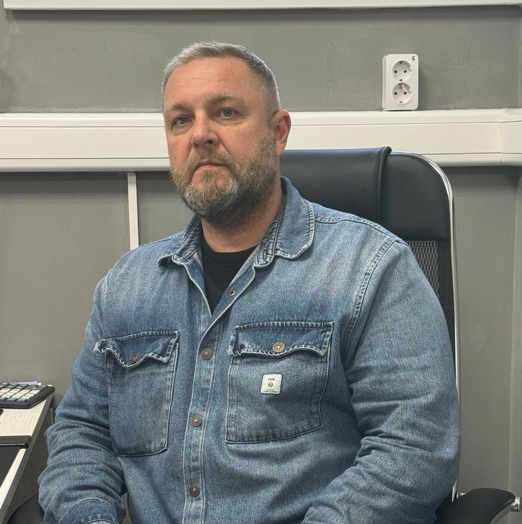

Лендинги
Сайты, которые не просто «есть», а собирают внимание, держат ритм и ведут человека по смыслу.
Vibe Coder / Portfolio / Web & AI Experiences
Не просто «что-то сверстать», а собрать ощущение, стиль, логику и подачу так, чтобы проект хотелось открыть, листать и запомнить.

● Available for work Vibe CoderЯ работаю на стыке кода, визуала, UX и AI-инструментов. Для меня сайт — это не набор блоков. Это ощущение от проекта, ритм, подача, структура и то, как человек чувствует себя внутри интерфейса.
Мой подход — сделать быстро, красиво и не бездумно. Чтобы проект не выглядел как очередной шаблон, собранный без вкуса и идеи.
Сайты, которые не просто «есть», а собирают внимание, держат ритм и ведут человека по смыслу.
Страницы, которые показывают не только работы, но и стиль, характер и уровень.
Когда нужен не просто сайт, а ощущение: атмосфера, характер, настроение, подача.
Использую нейросети как инструмент ускорения и усиления идей, а не как замену мышлению.
Продумываю, как человек читает, куда смотрит, где теряется и где принимает решение.
Могу собрать сильную первую версию быстро, без месяцев бесконечных согласований.
Я смотрю не только на задачу, но и на ощущение, которое должен передавать проект.
Красивый сайт без логики — это просто красивая обёртка. Поэтому я собираю смысл, сценарий и путь пользователя.
Когда есть стиль и логика, проект собирается быстрее, точнее и выглядит сильно.
Лендинг для digital-продукта с акцентом на атмосферу, скорость восприятия и современный визуал.
Что сделано: структура, тексты, дизайн-концепция, сборка.
Личный сайт-портфолио, который показывает не только кейсы, но и стиль человека.
Что сделано: позиционирование, подача, визуальный ритм, упаковка работ.
Промо-страница под воронку и digital-продукт с акцентом на конверсию и лёгкость восприятия.
Что сделано: логика блоков, тексты, CTA, визуальный каркас.
Сайт с упором на трендовую подачу, сильный первый экран и ощущение «это хочется переслать».
Что сделано: creative direction, структура, визуальная концепция.
Потому что я умею видеть проект целиком. Не только как это собрать, но и:
эстетика + структура + digital-мышление + скорость
Но если честно — главный инструмент не стек, а вкус, насмотренность и умение собирать цельное впечатление.
Хороший сайт — это не когда «нормально сверстано». Это когда у проекта появляется энергия, форма и ощущение, что он живой.
Могу помочь с концепцией, структурой, упаковкой и реализацией. От первого вайба до готовой страницы.